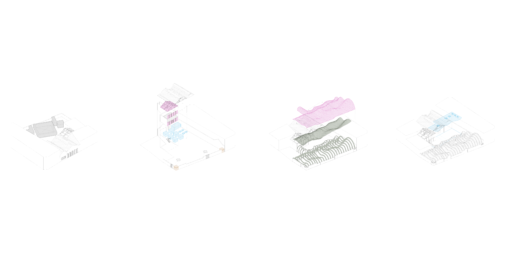
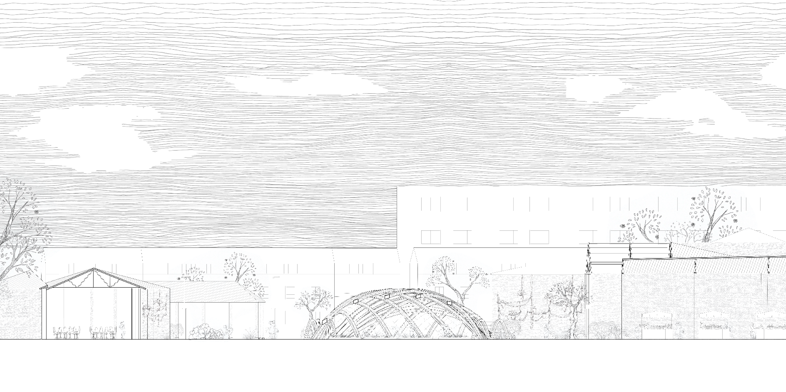

“We’ve eliminated contact with spirit from our lives and are looking to technology to reflect consciousness back to us. Our tools become the mirror of a condition that exists everywhere: a mirror of nature.” I designed a communal green space and a school extension for locals to learn how to do urban growing. The project draws on a range of research topics including: local supply chains of sustainable and reusable materials, urban farming in London, shingle cladding and timber grid shells. Shingles are used to develop an adjustable facade system to regulate the amount of sun the greenhouse receives during the day. I am starting with a traditional timber construction and then move on to recycled plastic shingles. x
LV 2023